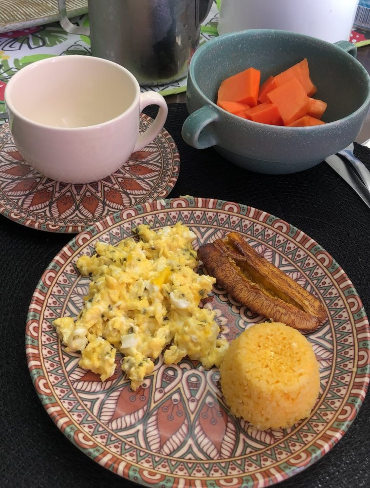

Início · Fases · Amamentação e pós-parto
Amamentação e pós-parto: quem amamenta também precisa comer.
Com um recém-nascido em casa, comer vira o último item da lista. Esta página reúne informação geral sobre a alimentação de quem amamenta e o que a Camila já explicou sobre o leite. O plano é individual, definido na consulta.
Entenda
Do que depende a produção de leite
Numa legenda sobre lactação, a Camila resumiu o que a literatura aponta como fatores centrais da produção de leite:
Sucção
O estímulo de sucção do bebê, com pega correta.
Energia
Ingestão adequada de calorias e carboidratos.
Água
Um bom consumo de água ao longo do dia.
Emoção
O emocional da mãe.
“Quando olhamos para a literatura sobre lactação, vemos que a produção de leite depende principalmente de 4 fatores centrais: o estímulo de sucção do bebê com pega correta, uma ingestão adequada de calorias e carboidratos, um bom consumo de água e o emocional da mãe.”
Legenda no Instagram · ver a publicaçãoSem mitos
Existe alimento que aumenta o leite?
Canjica, cerveja preta, aveia: toda família tem uma receita. A Camila trata o assunto com cuidado:
“Apesar do estudo super interessante, ainda não podemos afirmar que um alimento realmente aumenta a produção do leite…”Camila Rheinschmitt, no Instagram · ver a publicação
A avaliação da pega e da mamada é feita com o pediatra e com profissionais de amamentação. A nutricionista cuida da alimentação de quem amamenta.
Rotina
A alimentação de quem amamenta
- Energia: refeições de verdade, sem dietas restritivas por conta própria.
- Água: à mão durante as mamadas.
- Variedade: frutas, verduras, cereais, feijões e proteínas ao longo do dia.
- Suplementos e restrições: só com orientação individual.

Pós-parto
Refeições possíveis no pós-parto
Nas primeiras semanas, ajuda pensar em refeições que se comem com uma mão só, lanches deixados prontos e na rede de apoio — quem cozinha, quem lava, quem lembra da água.
Na consulta, a rotina real da casa entra no plano: o que dá para preparar, quem ajuda e quais horários existem de fato.
Consulta
A consulta na amamentação
- EscutaParto, amamentação, sono, apetite e rotina.
- AvaliaçãoMedidas, exames e alimentação atual.
- OrientaçãoUm plano possível para quem amamenta.
- RetornoAjustes conforme o bebê cresce e a rotina muda.
Dúvidas frequentes
Perguntas comuns
Preciso comer por dois enquanto amamento?
A necessidade de energia aumenta, mas a quantidade é individual. Na consulta, o plano considera a sua rotina e o seu apetite.
Posso fazer dieta para perder peso amamentando?
Dietas restritivas por conta própria não são indicadas na amamentação. Qualquer ajuste é conversado na consulta, de forma individual.
Posso levar o bebê à consulta?
Pergunte pelo WhatsApp como a consulta pode ser organizada para vocês.
Agende
Comece pela primeira consulta.
No Edifício Mais Empresarial, em Buraquinho, Lauro de Freitas. O agendamento é pelo WhatsApp (71) 99726-6787.